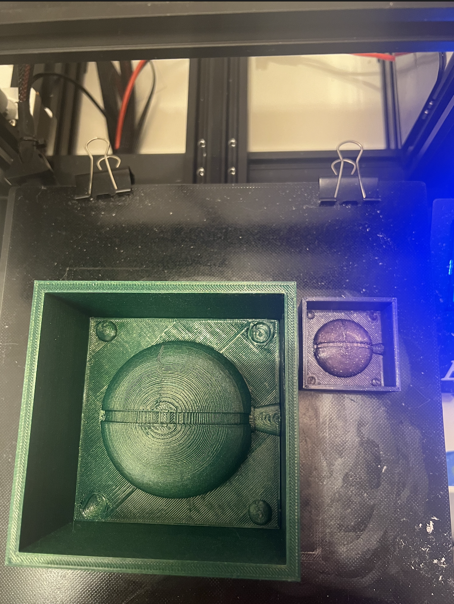
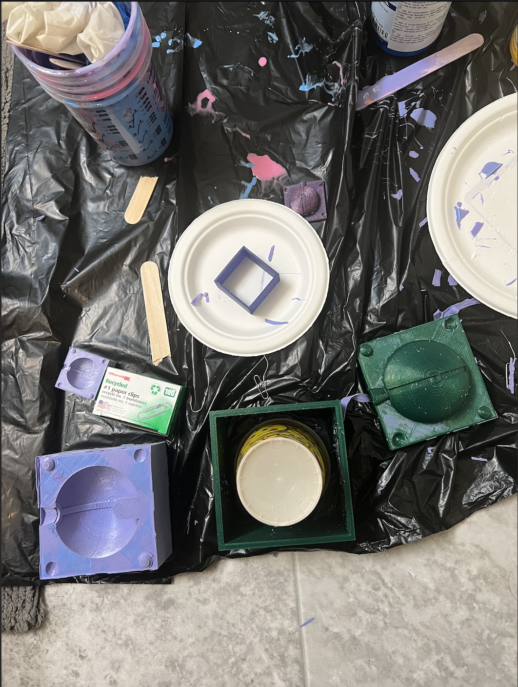
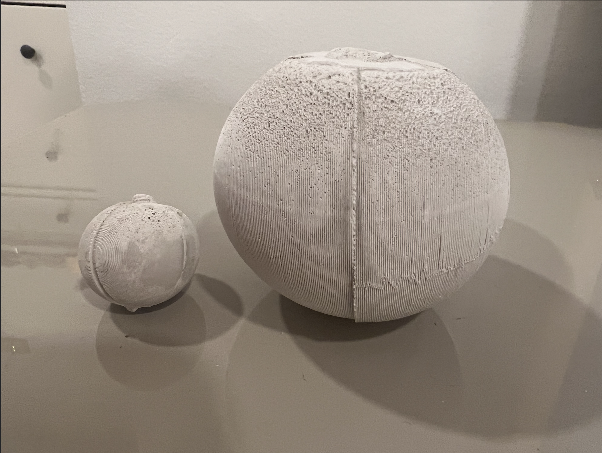
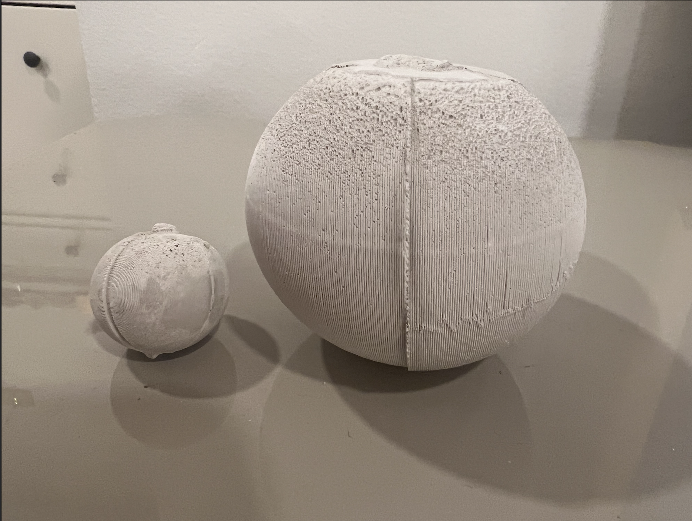

Here was my final mold for mold from last week:

Since the 3D print took ~11.5 hours and Oomoo takes 10 hours to set without babysitting, I chose to Oomoo these molds twice since the object is symmetrical. I decided to Oomoo both the small scale and the larger Pokeball. I bought mixing cups, popsicle sticks, funnels, paper clips, and rubber bands additionally for this assignment.
I had barely enough Oomoo :(! But I was able to have enough to create the molds. HOWEVER, it took sweat and tears (and luckily not blood), to get these molds out! Although I had detachable walls, the surface tension was very high. The small scale came out easily, but not so much with the large scale. I ended up using a cup to push the center out with my full body weight and hands on the edges. I have bruises on my hands and sore arms and took about 1 hour per Oomoo, so 2 hours total to get the molds separated from the 3D prints.

This next part I forgot to take pictures of since I was wearing lots of protective gear and doing it outside since I didn't want any casting material in the house nearby the kitties. First, I applied the recommended lubrication spray. Then, I mixed my Perfect Cast and used small plastic funnels placed in the sprue to pour it in. I accidentally overfilled both when trying to pour, I tapped the edges to ensure it settled down and wiped away the excess. I also barely had enough Perfect Cast! I waited 45 min to remove the casts from the molds.
The small scale removed just fine. The larger scale first half removed fine, but the second half the hole maker extension of the mold ripped off. If I had moved slower, I probably could've prevented this from ocurring. The hole at the bottom did turn out great though!
 However, there is a noticeable seam and defect at the top.

I think this may have to do with the overflow while pouring with the funnel and too much air, however I do not have enough Perfect Cast to try again. Plus, these issues can be fixed with sanding and the final painting of the Pokeball to come next. Stay tuned for how I finish and reuse this Pokeball for my final project!
Acknowledgements:
Peer teachers: Jessica Douma for helping with detachable walls and Noelle for quicker print settings (from part 1!)
Moral support: Jessica Douma, Miranda
Teaching support: TA Junchao
Again the link to all documents if not wanting to scroll up :P [Includes Rhino, STLs] :
Emily's 533 Github Assignment 7 Files
However, there is a noticeable seam and defect at the top.

I think this may have to do with the overflow while pouring with the funnel and too much air, however I do not have enough Perfect Cast to try again. Plus, these issues can be fixed with sanding and the final painting of the Pokeball to come next. Stay tuned for how I finish and reuse this Pokeball for my final project!
Acknowledgements:
Peer teachers: Jessica Douma for helping with detachable walls and Noelle for quicker print settings (from part 1!)
Moral support: Jessica Douma, Miranda
Teaching support: TA Junchao
Again the link to all documents if not wanting to scroll up :P [Includes Rhino, STLs] :
Emily's 533 Github Assignment 7 Files